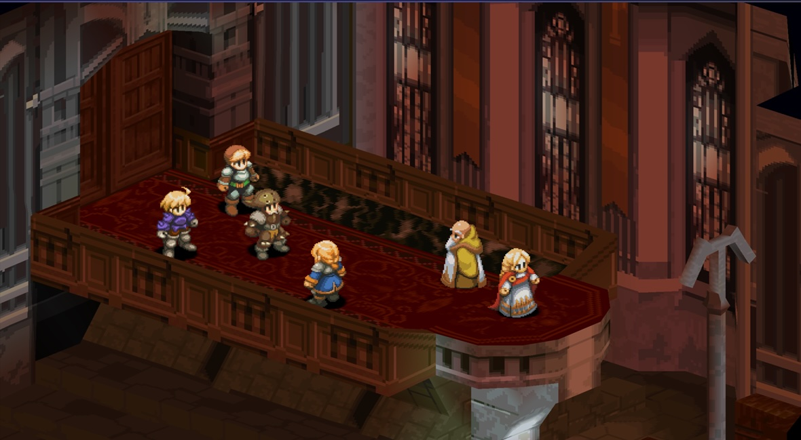
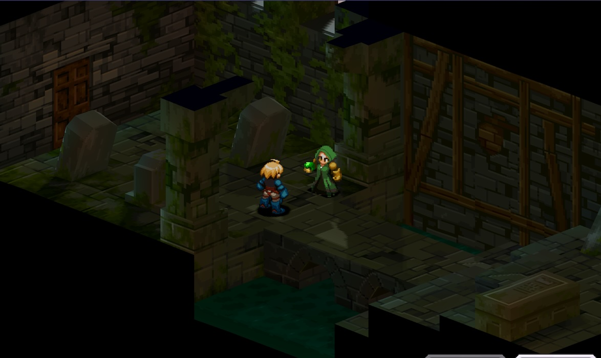
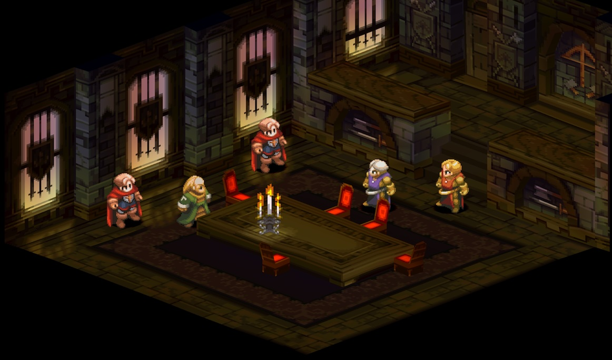
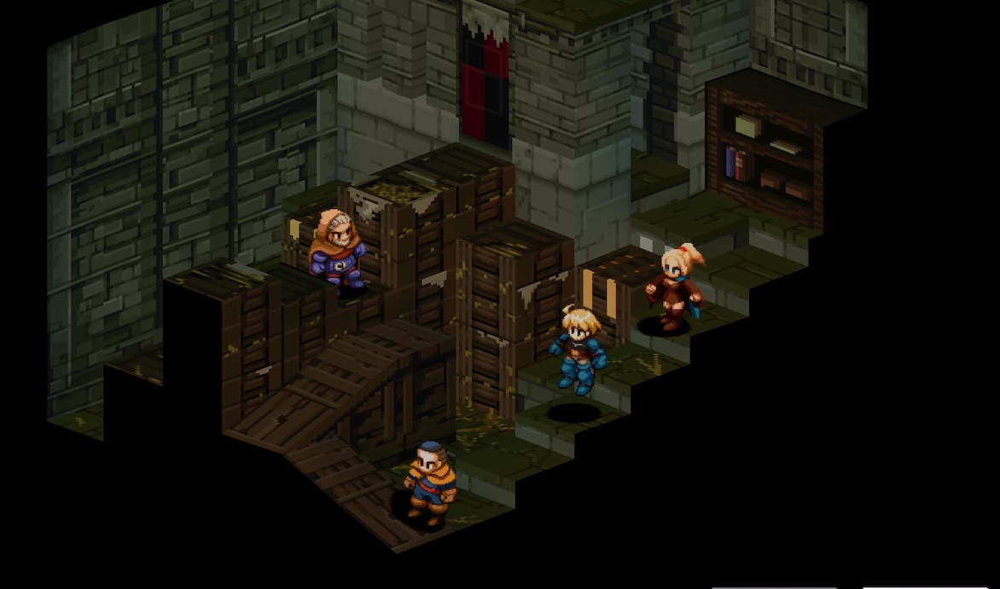

Story
Once upon a time, the great lands of Ivalice was divided into two factions. It is said that this war was ended by a young hero Delita, who rose from a commoner to the king. It is a famous heroic tale that even children know in this world. However in this story, there was a hidden true hero who did not appear on the front stage of history. His name Ramza, the third son of the prestigious Beoulve family. There has never been a record of him playing an active role of bringing peace. It turns out that the white paper of july has been hidden by the church for many years stating that Ramza is the true hero. According to the church, this young man was a heretic who despised God and disrupted the order of the nation. The truth? Let's go on a journey together to find out the truth.
One day, a mysterious group riding chocobos heads for the Orbonne Monastery. Within the ruins of the Abbey, Princess Obelia is offering her prayers. Next to her are Agrias, a knight from the Northern Heaven Knights, and Gafgarion, a mercenary swordsman hired as rearguard, and Ramza. At this time, knights from the Southern Heaven Knights of Goltanna arrive at the monastery and demand the surrender of the princess. As they are in charge of guarding her, Ramza and his men naturally refuse to hand her over, and several thousand of them join them. However,in the middle of the battle, a scream is heard inside the monastery. Ramza rushes back inside, but by that time, the princess has already been kidnapped by someone. And there he finds out is his former best friend, Delita, who was thought to be dead. From this moment on, the gears of fate of this story begin to turn with a loud noise.
Ramza will witness political corruption and a myth throughout his journey.
Zodiac Stone
The Zodiac Stones appear and are mentioned throughout the game of Final Fantasy Tactics. The Zodiac Stones are a prominent element in the story of the Zodiac Brave Story, a legend highly regarded by the Church of Glabados as the central doctrine of the religion's teachings. The twelve Zodiac Braves, in legend, fought against the Lucavi, driving them back into the spirit world. The legend goes on to say that the Braves, carrying the Zodiac Stones in hand, would come to save humanity should they ever be in peril.
Church of Glabados
The Church of Glabados, also known as Glabados Church, is a religious organization. Formed soon after the fall of Mullonde, the center of Pharism, it centers around a divine figure named Saint Ajora Glabados. It carries a dark secret regarding Saint Ajora. This secret has lead them into a corrupt organization.
War of the Lions
The War of the Lions is fought between the Order of the Northern Sky Knights of Duke Larg under the banner of the White Lion, and the Order of the Southern Sky Knights of Duke Goltanna under the banner of the Black Lion. King Ondoria Atkascha III died due to the Black Death and his heir, Prince Orinus, is just two years old. A regent is sought to rule in the prince's place, and both dukes who were decorated generals in the Fifty Years' War were nominated as regent.